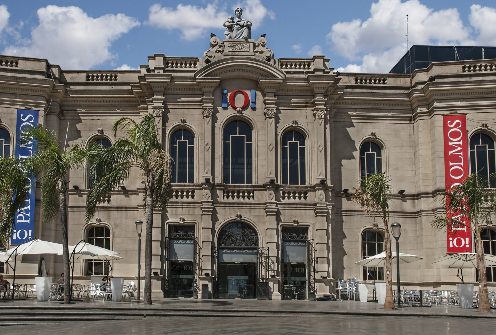

La ciudad de Córdoba fue fundada a orillas del río Suquía el día 6 de julio de 1573, por don Jerónimo Luis de Cabrera.
Fue un militar de Sevilla que pertenecía a la corriente colonizadora del Perú. El nombre elegido por Cabrera es un homenaje a los ancestros de su esposa, Luisa Martel de los Ríos, oriundos de la ciudad española homónima, en la región andaluza.
Córdoba quedó incorporada a la Provincia del Tucumán, con dependencia política hacia el Virreinato del Perú. A partir de 1776 formó parte del Virreinato del Río de la Plata.
El 5 de agosto de 1783, mediada por la necesidad de dividir el Virreinato, Córdoba se declara capital de la intendencia. Su primer gobernador intendente fue el Marqués de Sobremonte.
El Shopping Patio Olmos es uno de los edificios arquitectónicamente más significativos de la ciudad de Córdoba.
Actualmente este Shopping es el más importante centro comercial de Córdoba, con más de 150 locales en 45.000 m², 3 niveles de cocheras, y un complejo de cines operado por el Grupo Hoyts
Avenida Vélez Sarsfield esq. Bv. San Juan